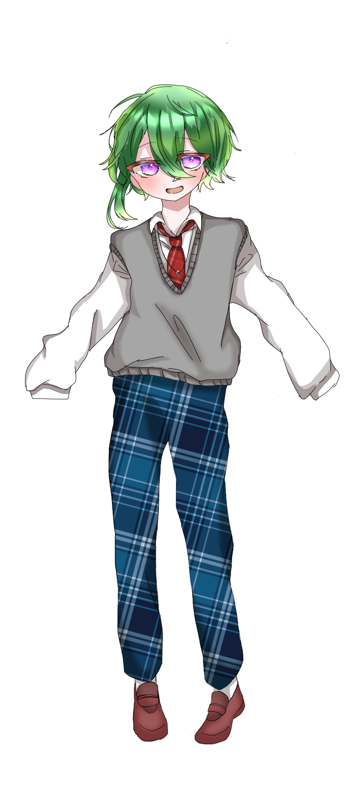
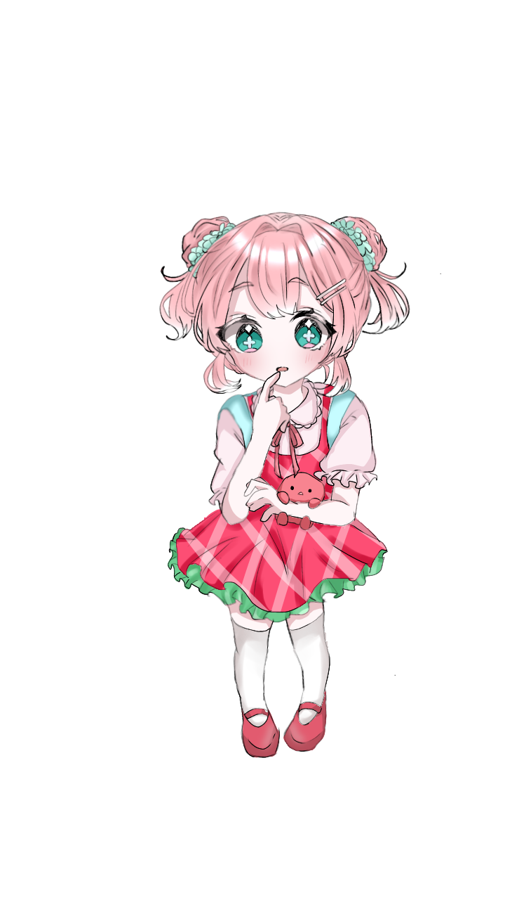
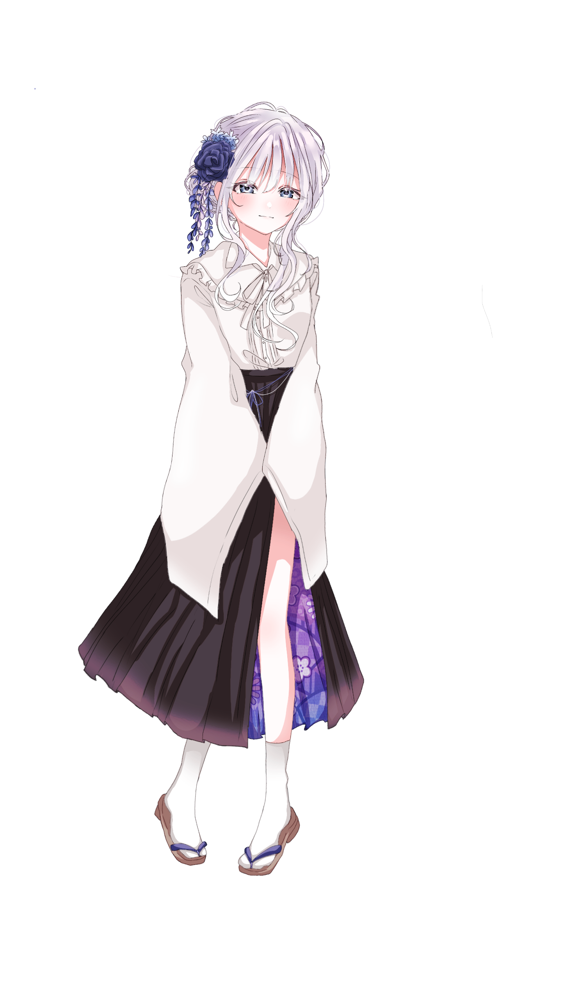
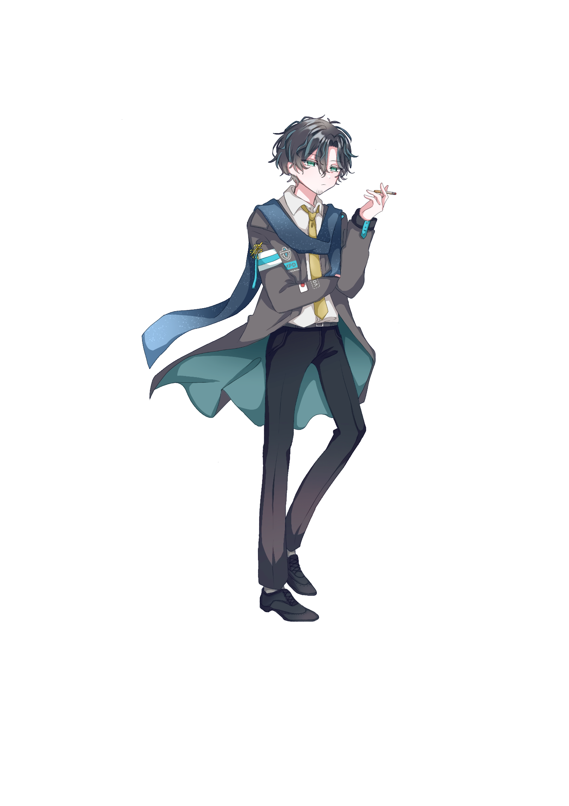

床面積
TRPG探索者の記録・アーカイブ
CHARACTER

月下 香
KILLER / 22F

花園 美桜
UNIVERSITY STUDENT / 19F

御薬袋 渉羽
MENTAL THERAPIST / 26M

入狗 梨明日
HIGH SCHOOL STUDENT / 16F

春川 咲
COMPANY EMPLOYEE / 25M

燈下 珠心
HIGH SCHOOL STUDENT / 15F

東郷 空木
FREETER / 28M

新井 伊縁
JUNIOR HIGH SCHOOL STUDENT / 14M
牡鹿 密列
POLICE OFFICER / 32M
逢望 栄飛
JUNIOR HIGH SCHOOL STUDENT / 15M
フスタ
FREETER / 17F
冷泉 一葉
UNIVERSITY STUDENT / 20M
落月 吏斗
HIGH SCHOOL STUDENT / 17M
神無月 狐影
KILLER / 22M

白妙 葉生
TEACHER / 28M

章姫 苺果
KINDERGARTEN CHILD / 3F
伏翼 天鼠
UNIVERSITY STUDENT / 21M
三色 菫
HIGH SCHOOL STUDENT / 17M

蔵芝 廿楽
HIGH SCHOOL STUDENT / 18M
夜雨 隼人
HIGH SCHOOL STUDENT / 16M
方波見 晴
HIGH SCHOOL STUDENT / 16M
イスト・ツァイトガ
COMPOSER / 24M
柏原 碇
HIGH SCHOOL STUDENT / 16M
白宮 由良
MUSICIAN / 24M

神代 藤華
HIGH SCHOOL STUDENT / 16F

四葩 集真
POLICE OFFICER / 38M

日向 茉昼
UNIVERSITY STUDENT / 20M
観月 彰
UNIVERSITY STUDENT / 22M
九重 快信
HIGH SCHOOL STUDENT / 17M
白石 霞実
NOVELIST / 29M
世那 響
HIGH SCHOOL STUDENT / 16M
八尋 凪
TEACHER / 26M